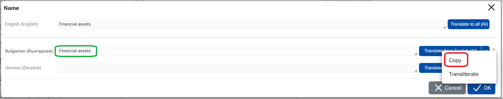
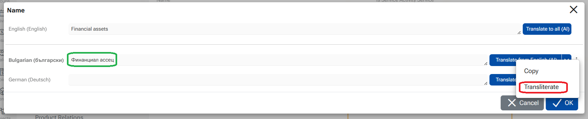

How to translate multilanguage fields in ERP.net Web Client
This example shows how to translate a Name field when a value exists in one language and needs to be translated into the other active languages.
Scenario
- Field: Product Name (multilingual)
- Existing value: in English is "Financial assets"
- Active platform languages: English, Bulgarian, German
- Goal: Translate the English value into Bulgarian and German

Steps
Open the record in Edit mode.
In the multilingual field, click Translate icon.
The multilanguage editor opens.
Click Translate to all (AI) button next to the English value in the top language field
The system translates the value from the source language (English) into all other active languages that do not yet have a value.
All fields below are filled with translated values eg. BG "Финансови активи", DE: "Finanzielle Vermögenswerte"

Translating individual languages
- Next to each language field, you can use the Translate from... button to translate only that specific language.
- Once any language field contains a value, it can be used as a source language for translation to the others.
eg. Translate from German - source DE: "Vermögenswerte" into Bulgarian - result BG: "Активи"

- Click on button OK to retain the translations
Additional options
Click the three-dot menu next to a language field to access more actions:
- Copy - Copies the value from the top source language and places it into the selected field.

- Transliterate - this is not a translation. Transliterates the value from the top source language and places it into the selected field.

Custom translations
Users can input any text into the language fields, that will be used as translations and will be visible in the platfrom when working in the corresponding language.